## I/O interactions ## **operating systems** ### csci 3411 ### Prof. **Sibin Mohan** <br> _<font size="5"> acknowledgments: some content modified from Silberschatz et al. and West</font>_ --- ## I/O management --- ## I/O management how does the CPU talk to _devices_? --- ## I/O management how does the CPU talk to _devices_? <p>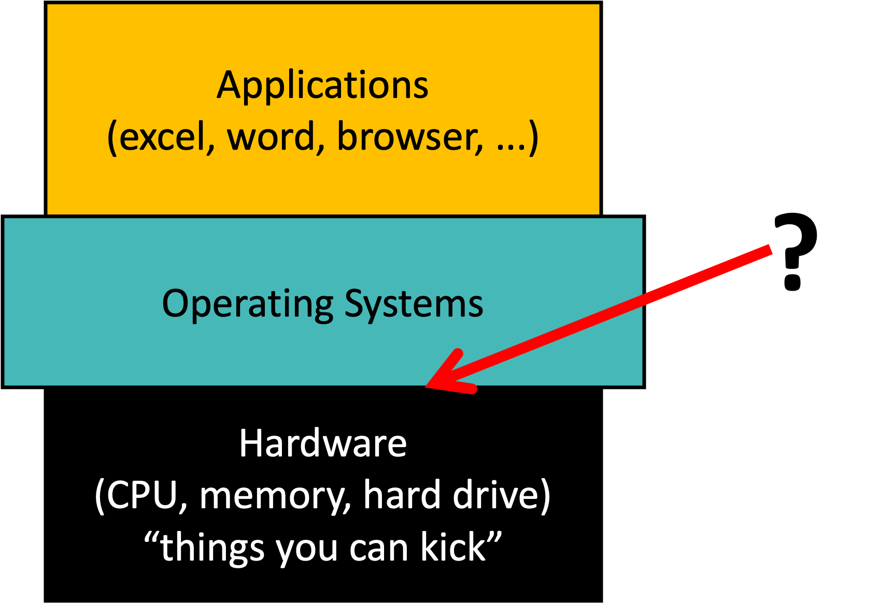</p> --- ## I/O management | **device controllers** --- <!-- .slide: data-background-color="white" --> ## I/O management | **device controllers** <p>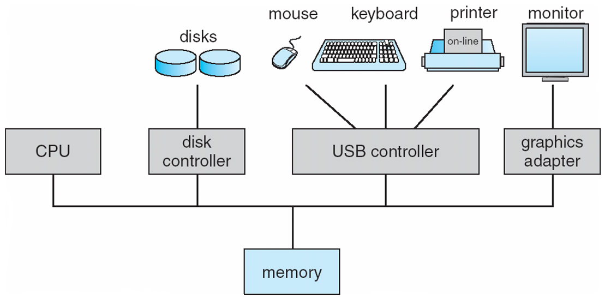</p> - each **device controller** → understands how to operate _its_ device --- <!-- .slide: data-background-color="white" --> ## I/O management | **device controllers** - each **device controller** → understands how to operate _its_ device - takes commands from the CPU → has **control regs/buffers** --- <!-- .slide: data-background-color="white" --> ## I/O management | **device controllers** - each **device controller** → understands how to operate _its_ device - takes commands from the CPU → has **control regs/buffers** - translates CPU commands → **device actions** --- ## I/O management | **device driver** --- <!-- .slide: data-background-color="white" --> ## I/O management | **device driver** <br> <br> - **OS code** that, --- <!-- .slide: data-background-color="white" --> ## I/O management | **device driver** <br> <br> - **OS code** that, - understands the layout of device control registers - and how to use them to **transfer data** --- ## I/O management | **the protocol** to get _a byte of data_ from a device... --- ## I/O management | **the protocol** to get _a byte of data_ from a device... 1. I/O is from the device → local buffer of the controller --- ## I/O management | **the protocol** to get _a byte of data_ from a device... 1. I/O is from the device → local buffer of the controller 2. CPU sets registers in controller with a command <br> → read (e.g. a character from keyboard) --- ## I/O management | **the protocol** to get _a byte of data_ from a device... 1. I/O is from the device → local buffer of the controller 2. CPU sets registers in controller with a command <br> → read (e.g. a character from keyboard) 3. CPU **waits** while data moves → controller buffer to memory --- ## the CPU **waits**... ...how long is that? --- ### the CPU **waits**... how long? | stage | latency | |-------|:-------:| | CPU cycle || | L3$ || | memory || | PCIe latency (128B) || | USB 3.0 || || --- ### the CPU **waits**... how long? | stage | latency | |-------|:-------:| | CPU cycle | <scb>0.3ns</scb> | | L3$ | <scb>18ns</scb> | | memory | <scb>135ns</scb> | | PCIe latency (128B) | <scb>900ns</scb> | | USB 3.0 | <scb>13000ns (13us)</scb> | || --- ### the CPU **waits**... how long? | stage | latency | |-------|:-------:| | CPU cycle | <scb>0.3ns</scb> | | L3$ | <scb>18ns</scb> | | memory | <scb>135ns</scb> | | PCIe latency (128B) | <scb>900ns</scb> | | **<font color="darkred">USB 3.0</font>** | **<font color="darkred">13000ns (13us)</font>** | || devices are **glacially slow** compared to a CPU cycle! --- ## a fundamental tension - I/O devices and the CPU → execute in **parallel** --- ## a fundamental tension - I/O devices and the CPU → execute in **parallel** - but the CPU must actively **wait** <br> → data transferred...byte...by...byte...at _slow_ speed --- ## a fundamental tension - I/O devices and the CPU → execute in **parallel** - but the CPU must actively **wait** <br> → data transferred...byte...by...byte...at _slow_ speed --- <!-- .slide: data-background-color="white" --> <p>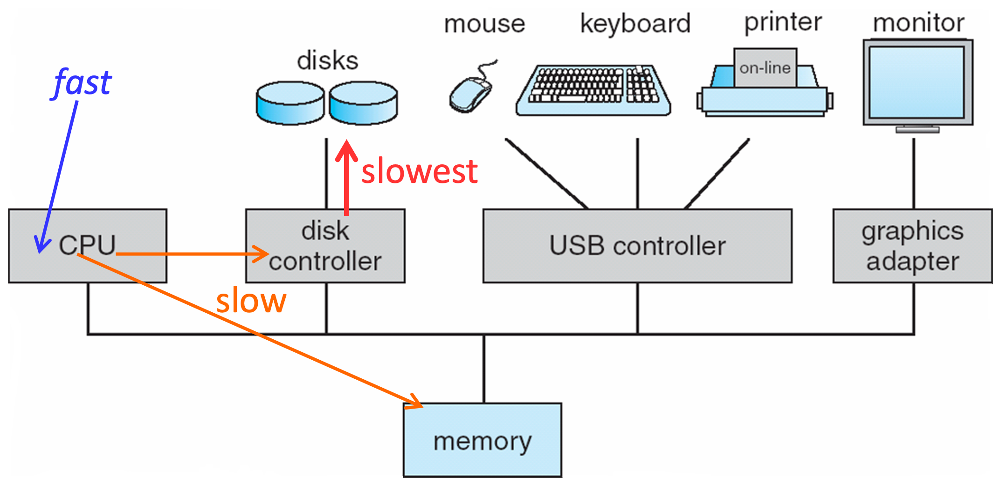</p> --- but we want **<font color="darkred">fast!</font>** is there a better way? --- ## cpu/device interaction | **programmed I/O** let's look at this as a _timing diagram_... Note: - the clock ticks the whole time; watch how many cycles the CPU wastes. --- ## cpu/device interaction | **programmed I/O** the CPU must actively **wait** while data moves byte...by...byte <p>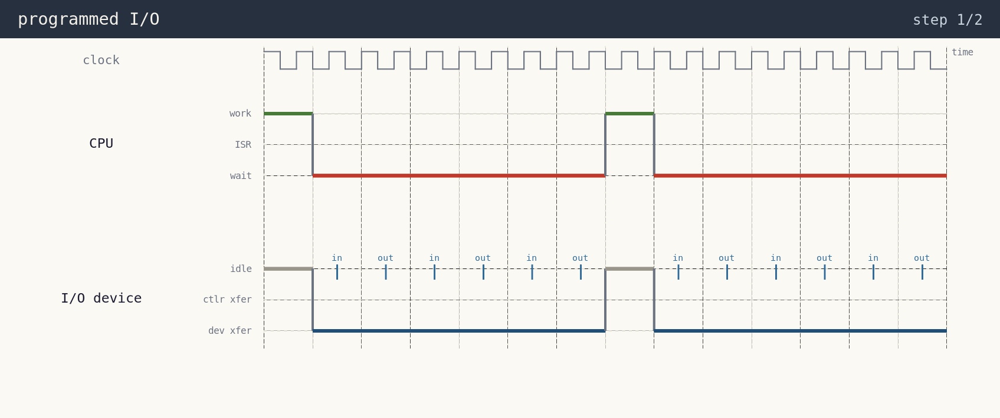</p> --- ## cpu/device interaction | **programmed I/O** the CPU is **stalled** the whole time -- is there a better way? <p>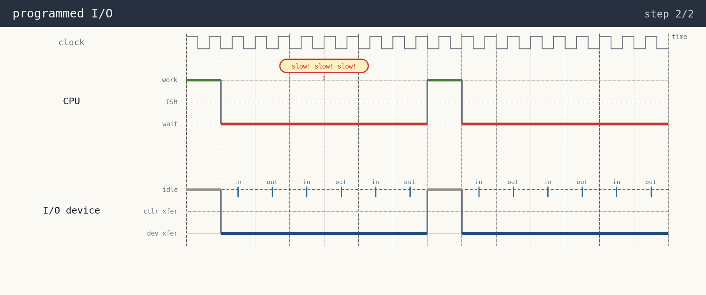</p> Note: - every one of those clock cycles is wasted spinning on the device. --- ## interrupts --- ## interrupts _replace_... --- ## interrupts _replace_... ask for byte --- ## interrupts _replace_... ask for byte → **wait, wait,** --- ## interrupts _replace_... ask for byte → **wait, wait, ...x3000..., wait** --- ## interrupts _replace_... ask for byte → **wait, wait, ...x3000..., wait** → get byte! --- ## interrupts _replace_... ask for byte → **wait, wait, ...x3000..., wait** → get byte! with ask for byte → **<font color="darkred">go back to business</font>** → notification* → get byte! --- ## interrupts _replace_... ask for byte → **wait, wait, ...x3000..., wait** → get byte! with ask for byte → **<font color="darkred">go back to business</font>** → notification* → get byte! <br> <br> [* byte is ready!] --- ## interrupts --- ## interrupts - transfer control (instruction pointer) - **interrupt service routine (ISR)** --- ## interrupts - transfer control (instruction pointer) - **interrupt service routine (ISR)** - ISR identified by address → **interrupt vector** --- ## interrupts - transfer control (instruction pointer) - **interrupt service routine (ISR)** - ISR identified by address → **interrupt vector** - HW interrupt operations - save **<scb>IP/SP</scb>** at the interruption --- ## interrupts - transfer control (instruction pointer) - **interrupt service routine (ISR)** - ISR identified by address → **interrupt vector** - HW interrupt operations - save **<scb>IP/SP</scb>** at the interruption - after servicing inerrupt - CPU **resumes** at → interrupted address --- ## interrupts | **open questions** - what about the **other registers**? - where are they saved? --- ## interrupts | **open questions** - what about the **other registers**? - where are they saved? - CPU knows location of **kernel stack**? Note: - we'll answer these with the stack diagrams next. --- ## interrupts | **trap vector** each vector entry holds the **address** of a handler (ISR) <p>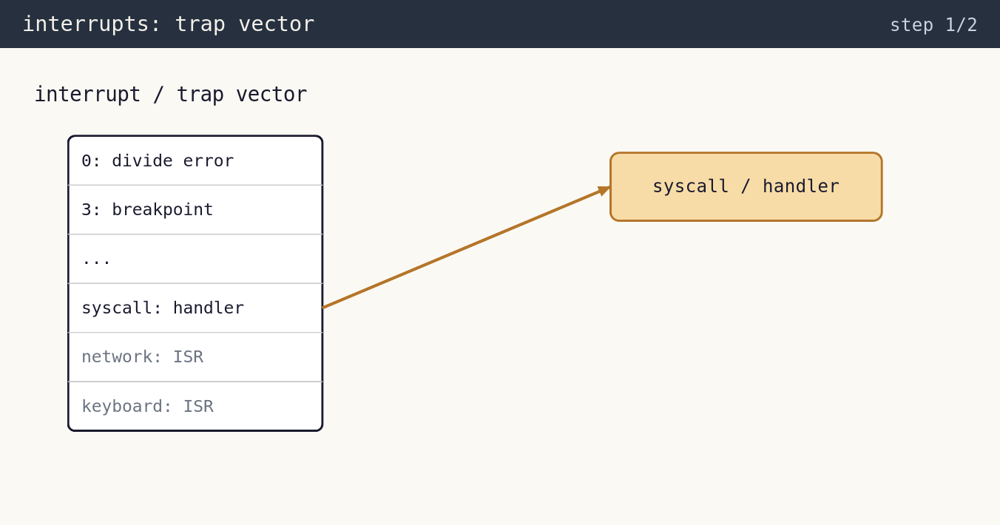</p> --- ## interrupts | **trap vector** each vector entry holds the **address** of a handler (ISR) <p>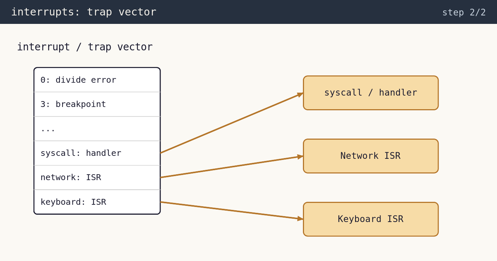</p> --- ## interrupts | **the stack** **user** execution stack grows down → interrupt fires inside <sc>bar()</sc> <p>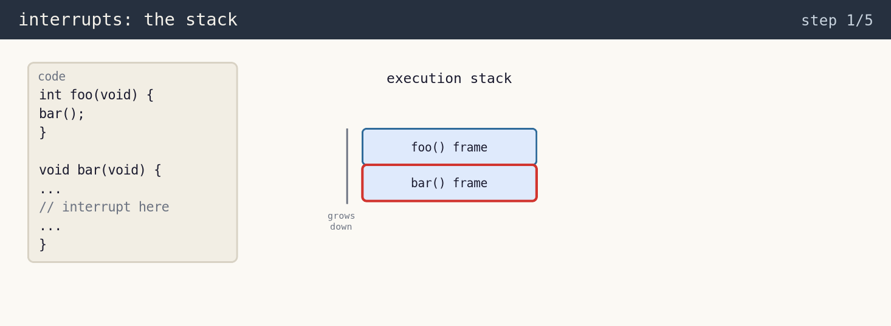</p> --- ## interrupts | **the stack** **user** execution stack grows down → interrupt fires inside <sc>bar()</sc> now what? where does the ISR data go? user regs? --- ## interrupts | **the stack** HW saves the interrupted **<scb>IP/SP</scb>** so it can resume later <p>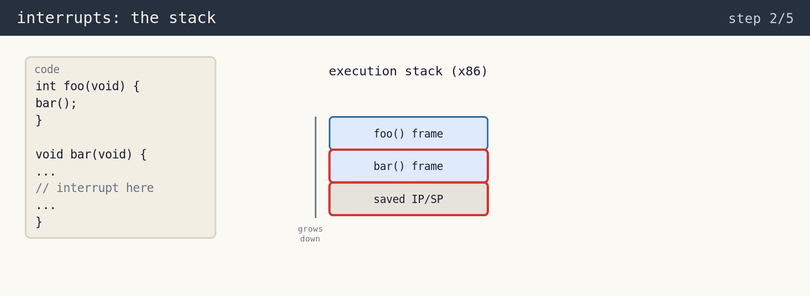</p> --- ## interrupts | **the stack** interrupt → switch to **kernel** stack (mode <scb>0</scb>) → user state saved --- ## interrupts | **the stack** interrupt → switch to the **kernel** stack (mode <scb>0</scb>); user state saved <p>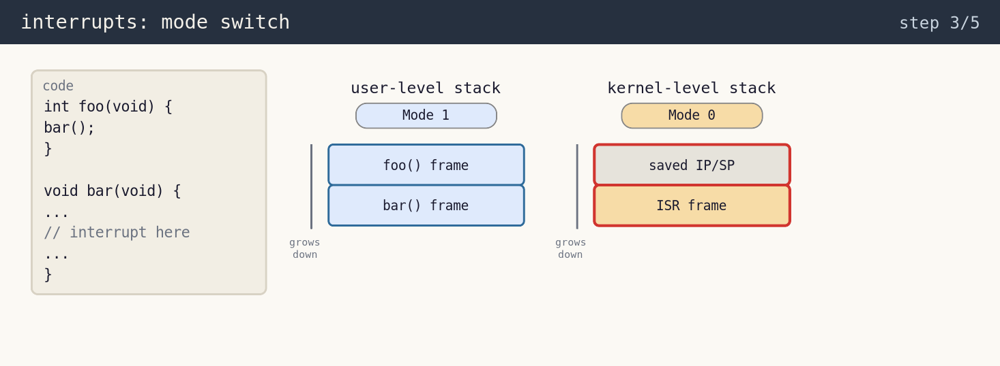</p> --- ## interrupts | one interrupt **inside** another? an interrupt _while already in an ISR_ → where does its state go? --- ## interrupts | one interrupt **inside** another? an interrupt _while already in an ISR_ → where does its state go? <p>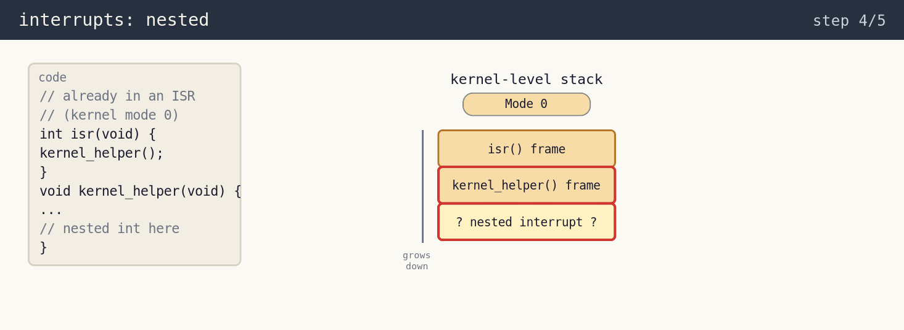</p> --- ## interrupts | **nested** nested interrupts stack on the **same** kernel stack (mode <scb>0</scb> → mode <scb>0</scb>) <p>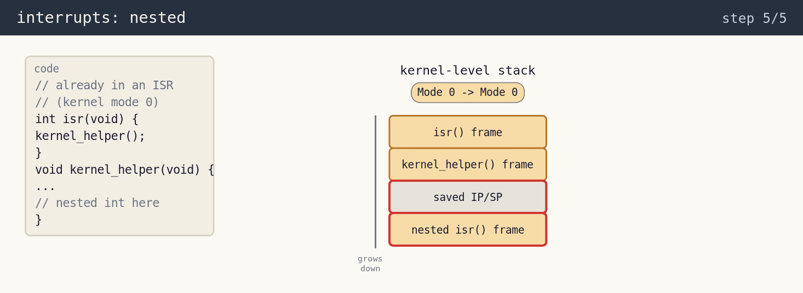</p> --- ## cpu/device interaction | **interrupts** CPU requests I/O, then goes back to **useful work** <p>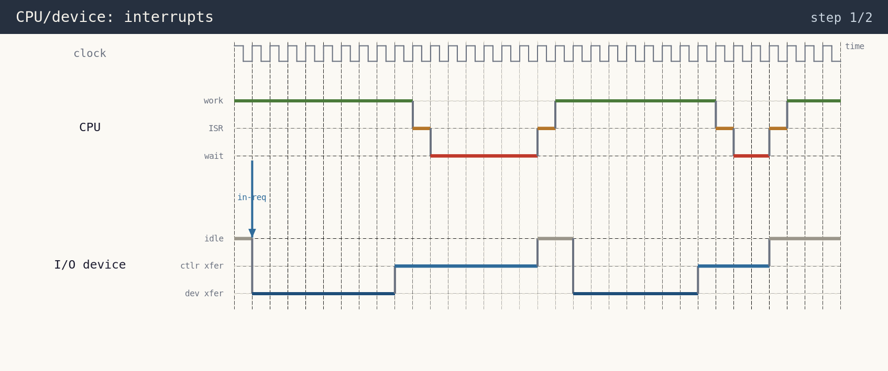</p> --- ## cpu/device interaction | **interrupts** device **interrupts** when ready → CPU runs the ISR, then resumes <p>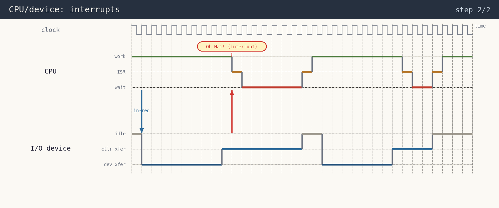</p> Note: - compare the clock: far fewer wasted cycles than programmed I/O. --- ## busy-wait vs. interrupts | **the payoff** same transfer time -- but look at what the CPU _does_ with it <p>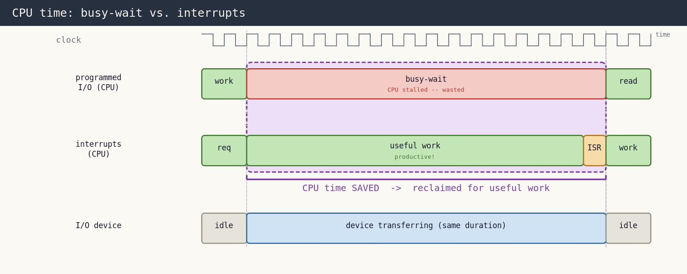</p> the **<font color="darkviolet">purple</font>** span is CPU time _reclaimed_ for useful work Note: - programmed I/O: CPU stalled (wasted) during the transfer. - interrupts: that same span is now productive -> the purple region is the win. --- what if the transferred data is **not** a single byte? --- ## direct memory access (DMA) --- ## direct memory access (DMA) - set up memory for device to transfer into - **CPU doesn't move data** --- ## direct memory access (DMA) - set up memory for device to transfer into - **CPU doesn't move data** - **device directly puts it in memory**! --- ## direct memory access (DMA) CPU: set up (large) buffers in memory **before** I/O <p>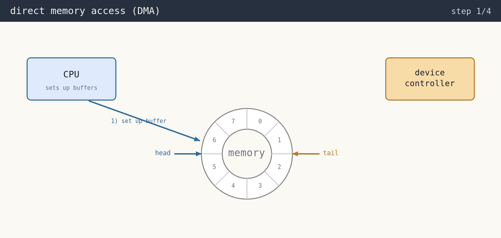</p> --- ## direct memory access (DMA) CPU: **ask** controller to transfer into buffer <p>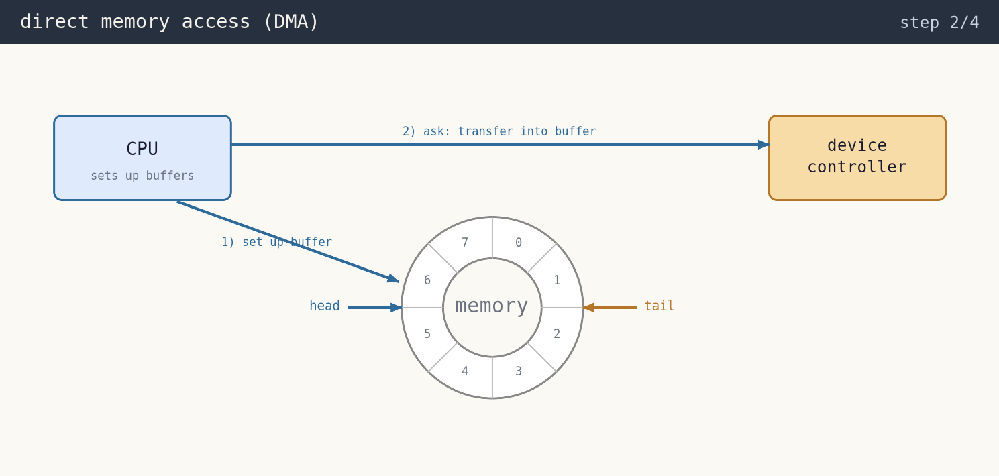</p> --- ## direct memory access (DMA) controller: **copy** data directly to memory (no CPU!) <p>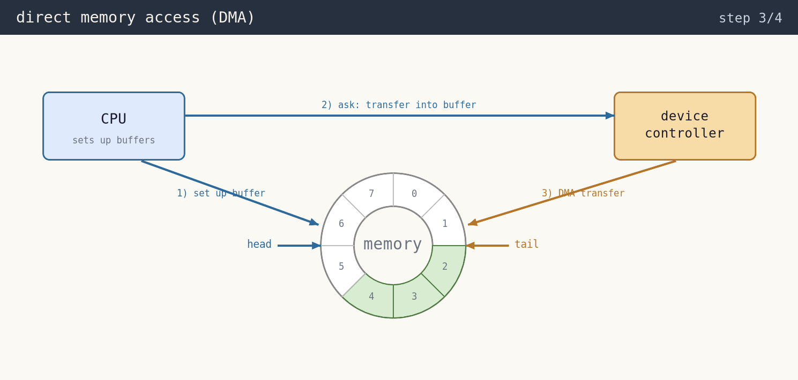</p> --- ## direct memory access (DMA) controller → send **<font color="darkred">one interrupt</font>** when transfer complete <p>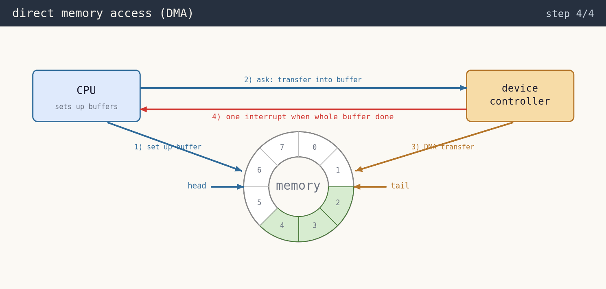</p> --- ## direct memory access (DMA) - avoids CPU work for **data-movement** --- ## direct memory access (DMA) - avoids CPU work for **data-movement** - **problem**: how do OS & device agree on buffer _locations_? --- ## direct memory access (DMA) - avoids CPU work for **data-movement** - **problem**: how do OS & device agree on buffer _locations_? - _multiple_ I/O requests → multiple buffers? --- ## DMA ring | **the idea** a "circular" buffer → indices **wrap around**: after <scb>n-1</scb> comes <scb>0</scb> <p>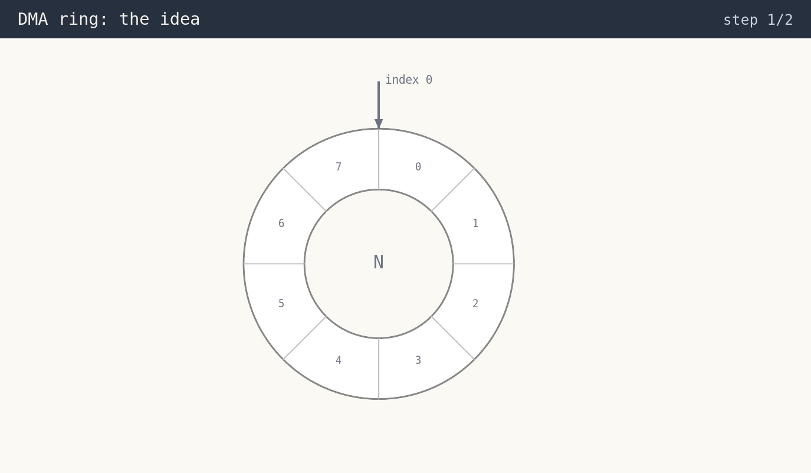</p> --- ## DMA ring | **the idea** "wrapping" / **modular arithmetic** → index <scb>n</scb> == index <scb>0</scb> <p>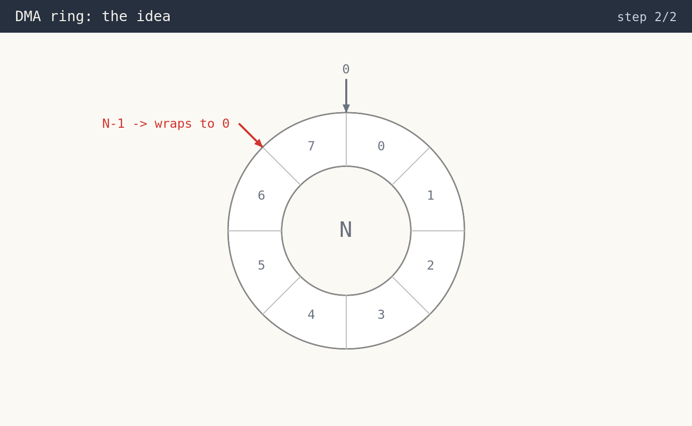</p> --- ## DMA ring | **CPU allocs memory** - CPU allocates ring slots - <sc>head</sc> & both <sc>tail</sc>s start together <p>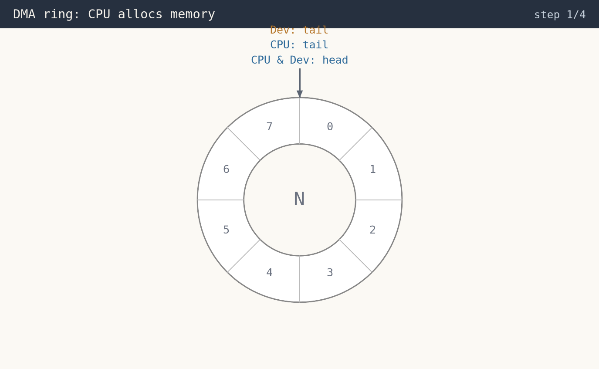</p> --- ## DMA ring | **adding to the ring** CPU enqueues empty buffers → advances the <scb>head</scb> <p>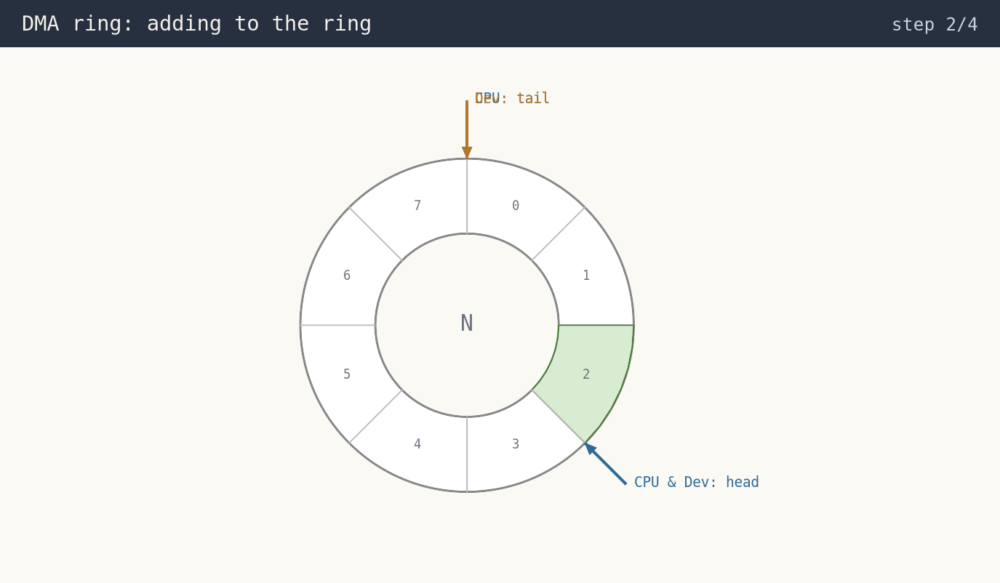</p> --- ## DMA ring | **Dev transfers into that** device DMAs data into slots → advances <scb>dev:tail</scb> <p>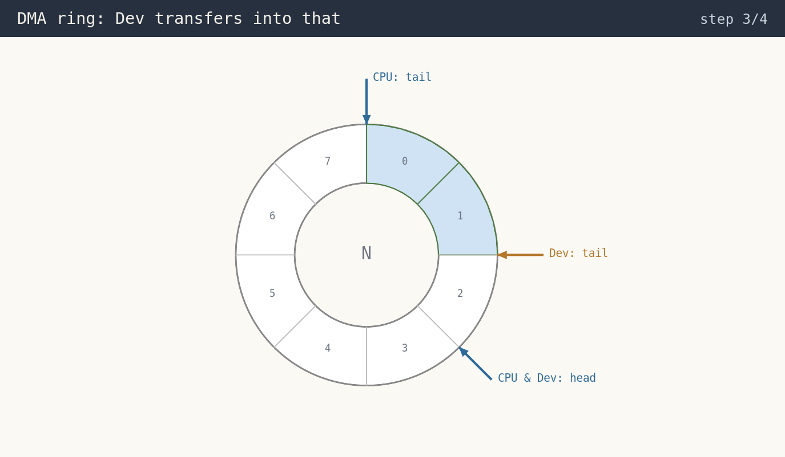</p> --- ## DMA ring | **interrupt** → CPU gets data interrupt! CPU dequeues filled slots → advances <scb>cpu:tail</scb> <p>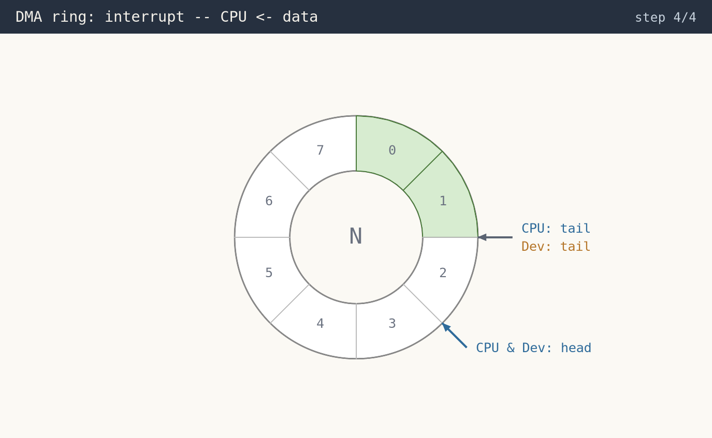</p> --- ## ring buffer | device/CPU communication - one ring shared by device & CPU - <scb>head</scb>, <scb>cpu:tail</scb>, <scb>dev:tail</scb> <p>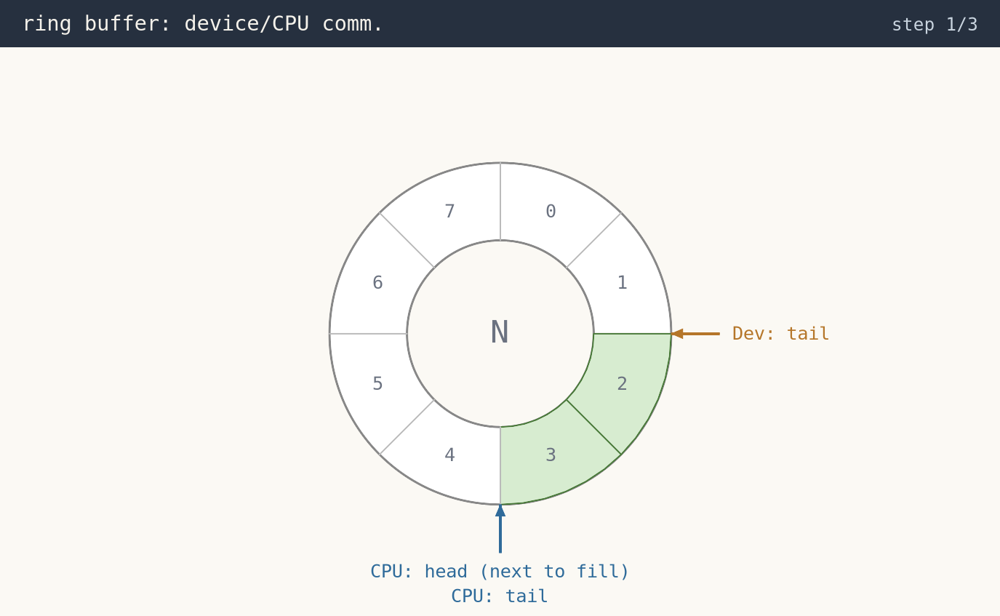</p> --- ## ring buffer | device/CPU communication <div class="multicolumn"> <div> <br> **device transfer** steps: - dequeue <scb>ptr</scb> - transfer - <scb>dev:tail++</scb> </div> <div> <p>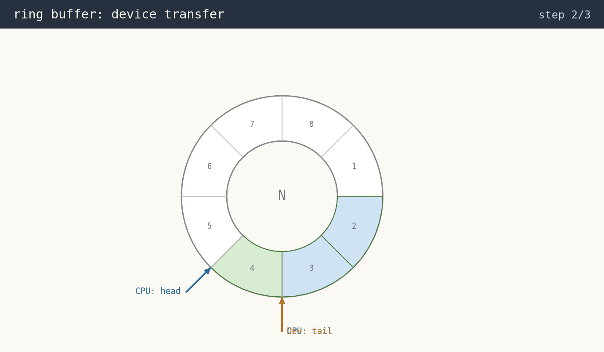</p> </div> </div> --- ## ring buffer | device/CPU communication - **CPU dequeue** → get I/O data, while <scb>cpu:tail < dev:tail</scb> <p>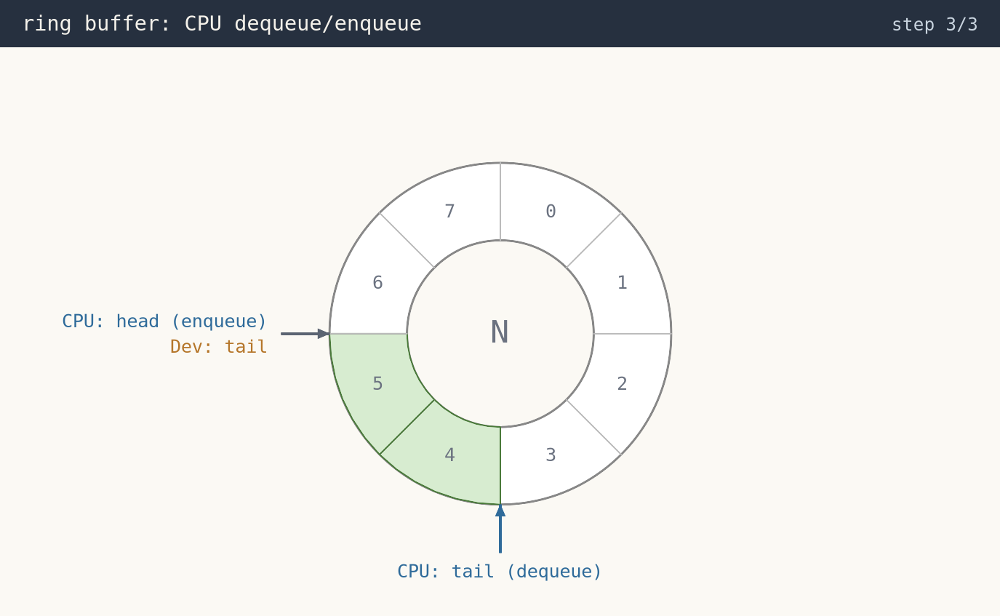</p> --- ## ring buffer | device/CPU communication - **CPU dequeue** → get I/O data, while <scb>cpu:tail < dev:tail</scb> - **CPU enqueue** → add memory @ <scb>cpu:head</scb> --- ## cpu/device interaction | **DMA** CPU sets up a buffer and asks the controller to fill it <p>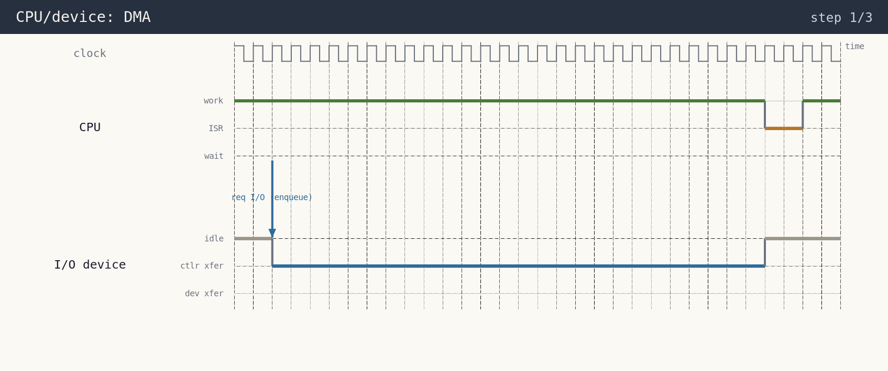</p> --- ## cpu/device interaction | **DMA** the DMA controller copies the **whole buffer** -- no CPU involvement <p>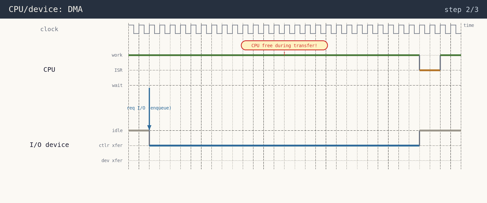</p> --- ## cpu/device interaction | **DMA** **<font color="darkred">one interrupt</font>** for the whole buffer → CPU dequeues data <p>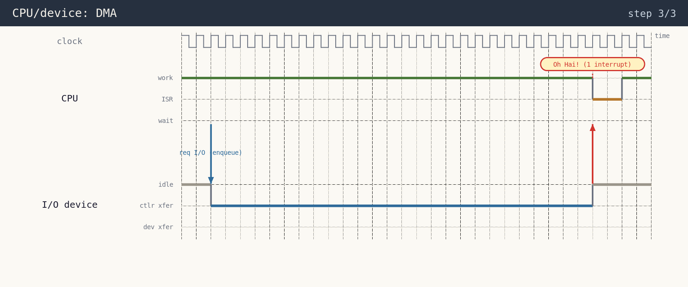</p> Note: - the clock shows the CPU stays busy the entire transfer. --- ## interrupts vs. DMA | **the payoff** --- ## interrupts vs. DMA | **the payoff** both keep the CPU busy → but interrupts pay _one ISR per byte_ --- ## interrupts vs. DMA | **the payoff** both keep the CPU busy → but interrupts pay _one ISR per byte_ <p>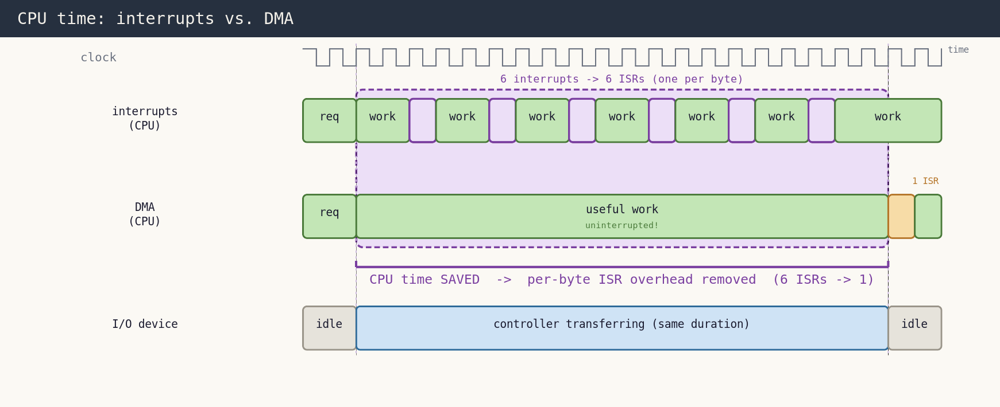</p> --- ## interrupts vs. DMA | **the payoff** both keep the CPU busy → but interrupts pay _one ISR per byte_ the **<font color="darkviolet">purple</font>** slivers are per-byte ISR overhead that DMA removes Note: - interrupts: an ISR fires for every byte -> lots of little context switches. - DMA: the controller moves the whole buffer, so only ONE ISR at the end. - the purple region is the aggregate ISR overhead reclaimed. --- ## DMA and interrupts - a keyboard device → **doesn't** cause many interrupts --- ## DMA and interrupts - a keyboard device → **doesn't** cause many interrupts - interrupt per key press → say <scb>100 interrupts/second</scb> - ISR overhead of 1us → 1/10000th of CPU time --- ## DMA and interrupts - a keyboard device → **doesn't** cause many interrupts - interrupt per key press → say <scb>100 interrupts/second</scb> - ISR overhead of 1us → 1/10000th of CPU time - how about a **networking card**? - <scb>100 GB/second</scb>! Note: - at line rate, interrupt-per-packet would drown the CPU -> motivation for polling. --- ## polling --- ## polling - kernel __repeatedly checks__ the status of I/O --- ## polling - kernel __repeatedly checks__ the status of I/O - read a device controller register --- ## polling - kernel __repeatedly checks__ the status of I/O - read a device controller register - has an I/O request finished, or not? --- ## polling - kernel __repeatedly checks__ the status of I/O - read a device controller register - has an I/O request finished, or not? - if I/O completed → CPU reads it into memory --- **frequency** of polling impacts **latency** and **throughput** --- **frequency** of polling impacts **latency** and **throughput** - so...should we simply poll at the _highest_ frequency? - is polling **<font color="darkred">ever</font>** better than interrupts? --- ## example | polling vs. interrupts 1 - office hours → _one_ professor, _multiple_ students --- ## example | polling vs. interrupts 1 - office hours → _one_ professor, _multiple_ students - explanation to a group of students takes <scb>10 min</scb> --- ## example | polling vs. interrupts 1 - office hours → _one_ professor, _multiple_ students - explanation to a group of students takes <scb>10 min</scb> <br> <br> the professor can do one of two things: --- ## example | polling vs. interrupts 1 - office hours → _one_ professor, _multiple_ students - explanation to a group of students takes <scb>10 min</scb> <br> <br> the professor can do one of two things: | method | behavior | overhead | |--------|----------|----------| | **interrupt** | students **knock** <br> wait or come in | <scb>1 min</scb>/interrupt | --- ## example | polling vs. interrupts 1 - office hours → _one_ professor, _multiple_ students - explanation to a group of students takes <scb>10 min</scb> <br> <br> the professor can do one of two things: | method | behavior | overhead | |--------|----------|----------| | **interrupt** | students **knock** <br> wait or come in | <scb>1 min</scb>/interrupt | | **poll** | students wait outside <br> prof **checks** every <scb>10 min</scb> | <scb>1 min</scb>/check | || --- ## example | polling vs. interrupts 2 - normal office hours: <scb>0.5 students/hour</scb> --- ## example | polling vs. interrupts 2 - normal office hours: <scb>0.5 students/hour</scb> - pre-test: <scb>12 students/hour</scb> --- ## example | polling vs. interrupts 2 - normal office hours: <scb>0.5 students/hour</scb> - pre-test: <scb>12 students/hour</scb> - "write a new OS": <scb>60 students/hour</scb>! --- which policy is best for... - **minimize** prof time spent on **polling/interrupts** - **minimize** student time spent **waiting** Note: - low rate -> interrupts win; high rate -> polling wins. --- ## office hours | let's picture it the analogy, made _concrete_ → prof = **CPU**, student = **I/O event** <p>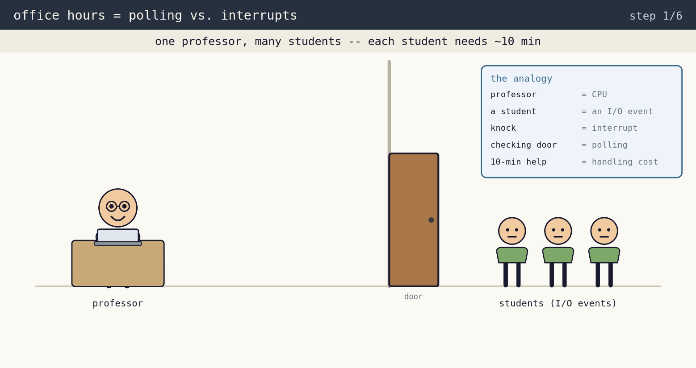</p> --- ## office hours | **interrupts**, low load a rare knock → the prof handles it and gets back to work <p>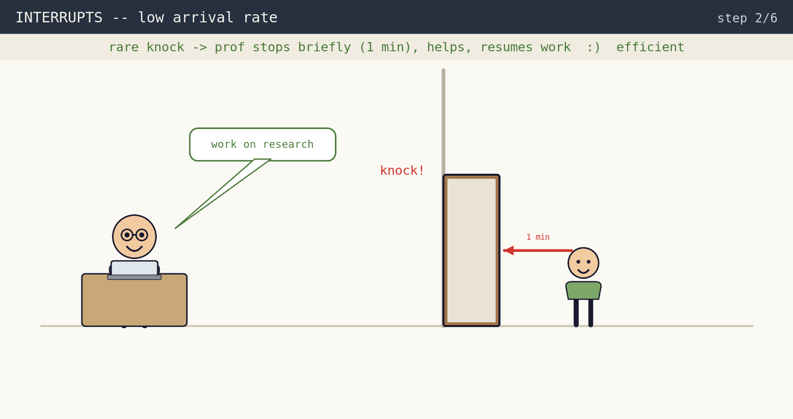</p> --- ## office hours | **interrupts**, high load everyone knocks at once → the prof "**thrashes**", gets nothing done <p>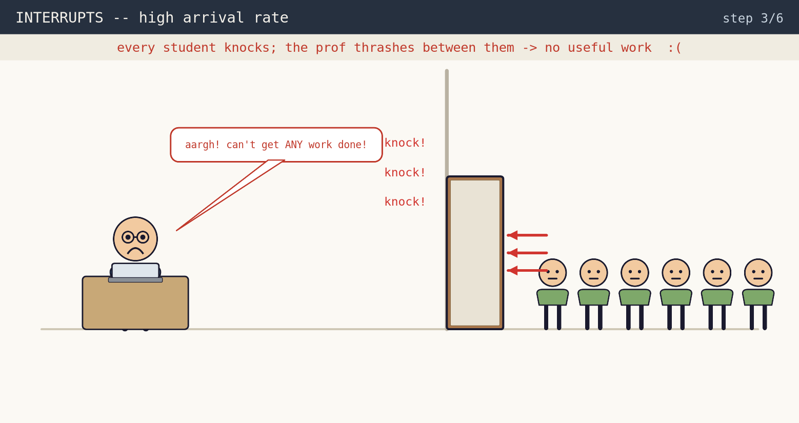</p> --- ## office hours | **interrupts**, high load everyone knocks at once → the prof **thrashes**, gets nothing done constant interrupts → **context-switch storm!** Note: - this is the "interrupt storm" / receive-livelock a busy NIC can cause. --- ## office hours | **polling**, low load checking an _empty_ door → wasted checks + long student waits <p>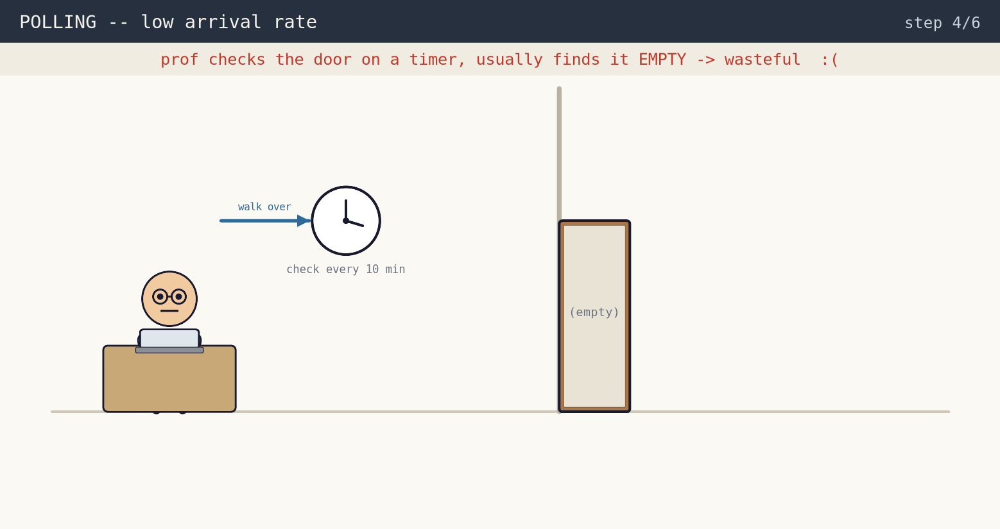</p> nobody there → wasted checks + student waits up to **10 min** --- ## office hours | **polling**, high load one check finds a **full queue** → cost amortized over the batch <p>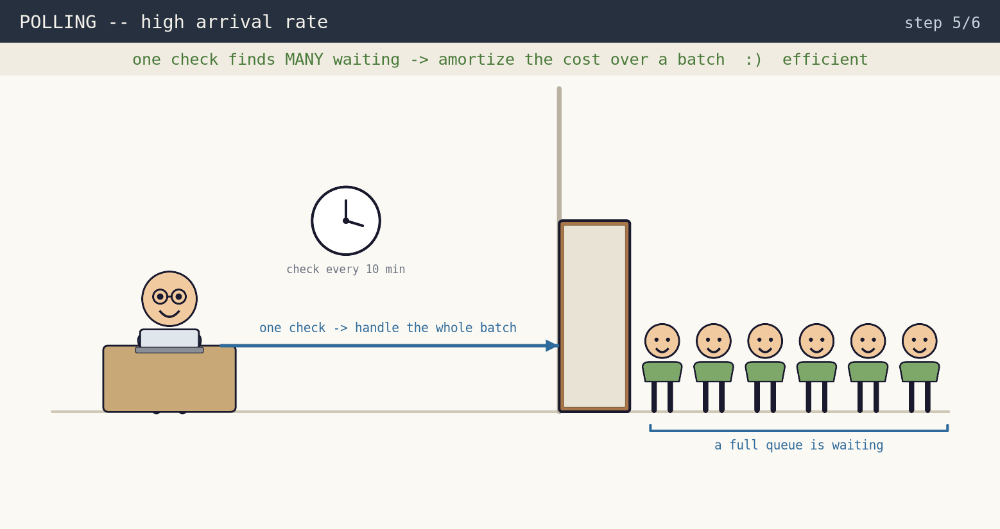</p> --- ## office hours | **the verdict** --- ## office hours | **the verdict** it depends on the **arrival rate** --- ## office hours | **the verdict** it depends on the **arrival rate** <p>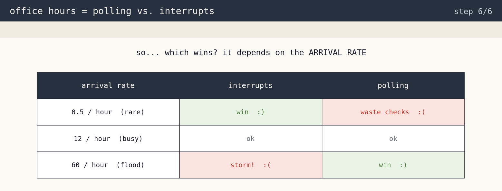</p> --- ## office hours | **the verdict** it depends on the **arrival rate** low rate → **interrupts** | high rate → **polling** [not a perfect analogy, but you get the gist] Note: - low rate -> interrupts; high rate -> polling; real systems switch adaptively (e.g. Linux NAPI). --- ## summary | OS interface to I/O --- <!-- .slide: data-background-color="white" --> ## summary | OS interface to I/O - communicate with devices over a "network" - optimized & on-chip/motherboard --- ## summary | OS interface to I/O - communicate with devices over a "network" - optimized & on-chip/motherboard - polling on I/O can be **expensive** --- ## summary | OS interface to I/O - communicate with devices over a "network" - optimized & on-chip/motherboard - polling on I/O can be **expensive** - allow devices to _notify_ you of events - → **interrupts!** --- ## summary | OS interface to I/O - communicate with devices over a "network" - optimized & on-chip/motherboard - polling on I/O can be **expensive** - allow devices to _notify_ you of events - → **interrupts!** - enable devices to _transfer_ data rather than the CPU - → **DMA!** --- ## summary | OS interface to I/O - communicate with devices over a "network" - optimized & on-chip/motherboard - polling on I/O can be **expensive** - allow devices to _notify_ you of events - → **interrupts!** - enable devices to _transfer_ data rather than the CPU - → **DMA!** <br> <br> not universal solutions, but **ubiquitous**